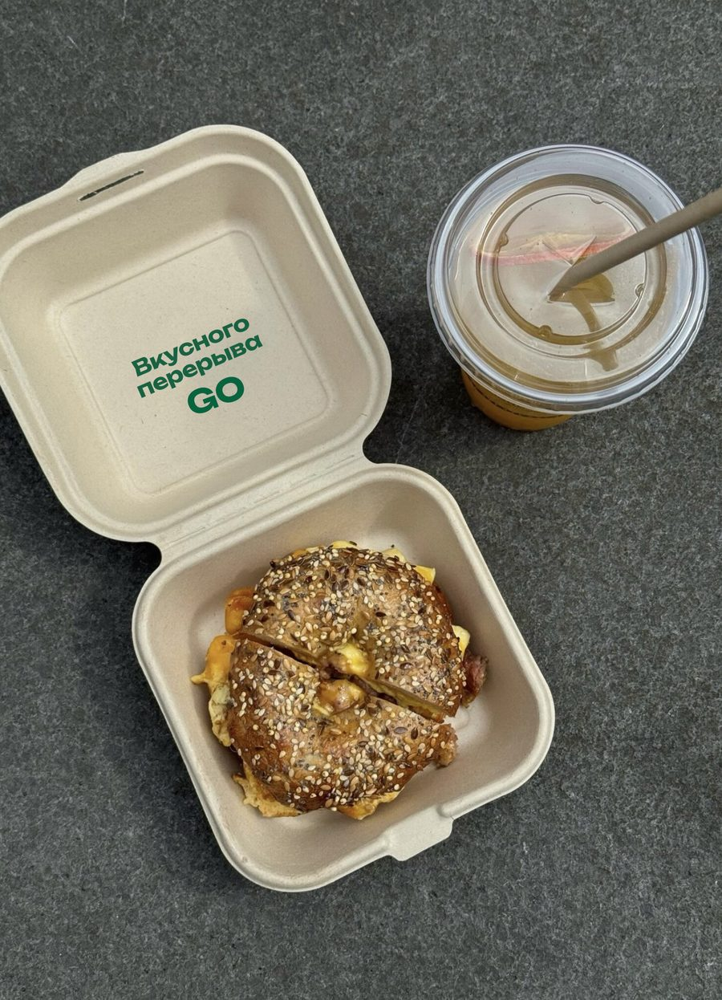
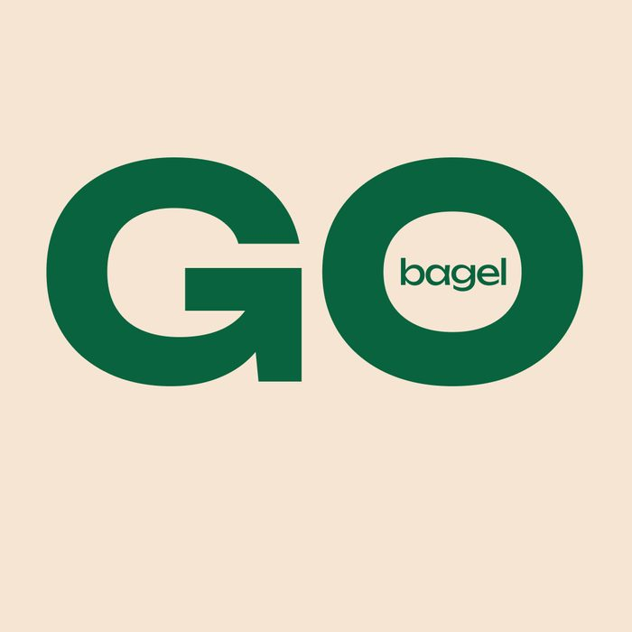
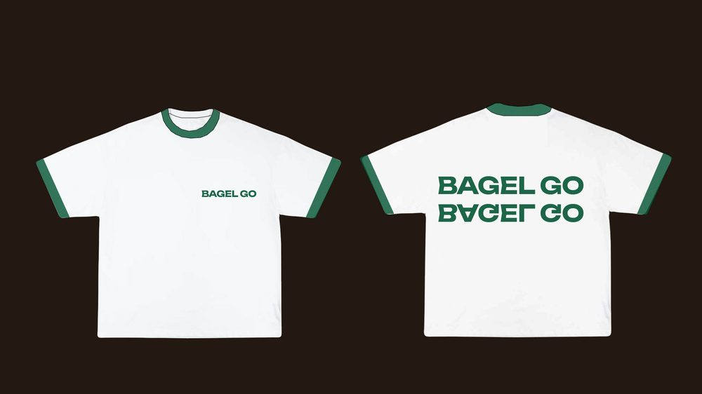
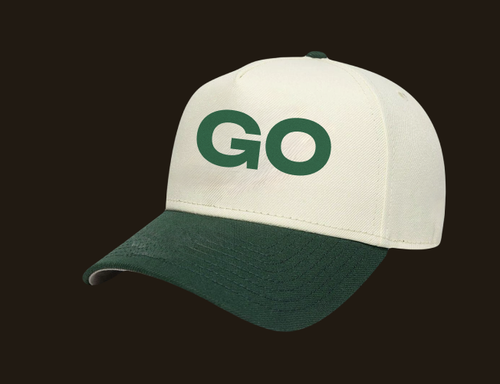
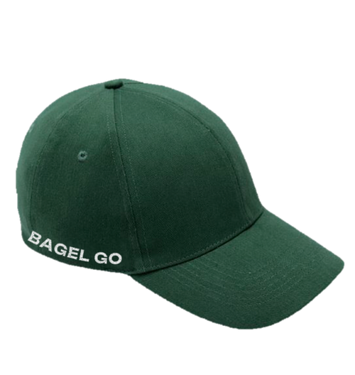
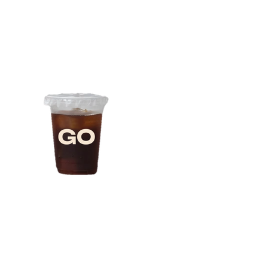
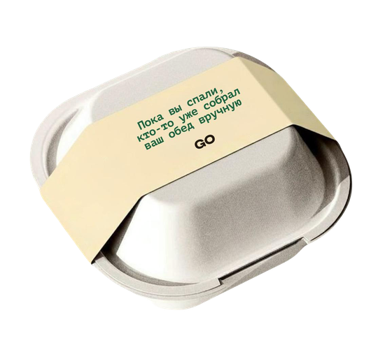
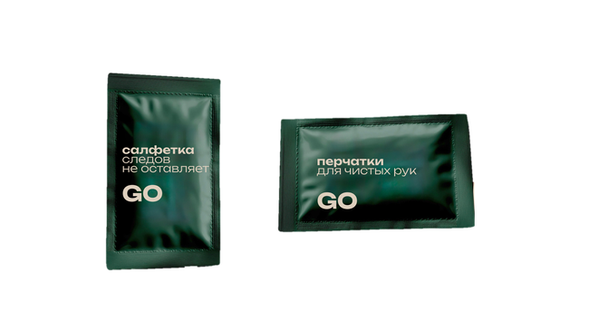
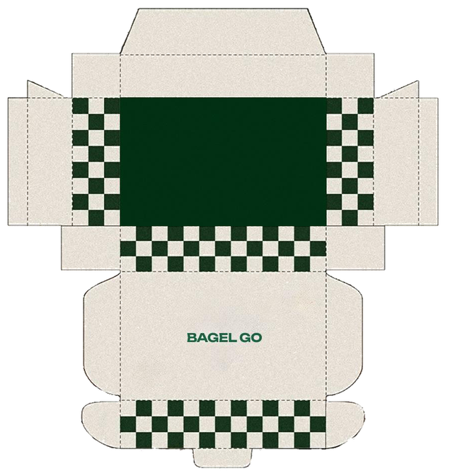
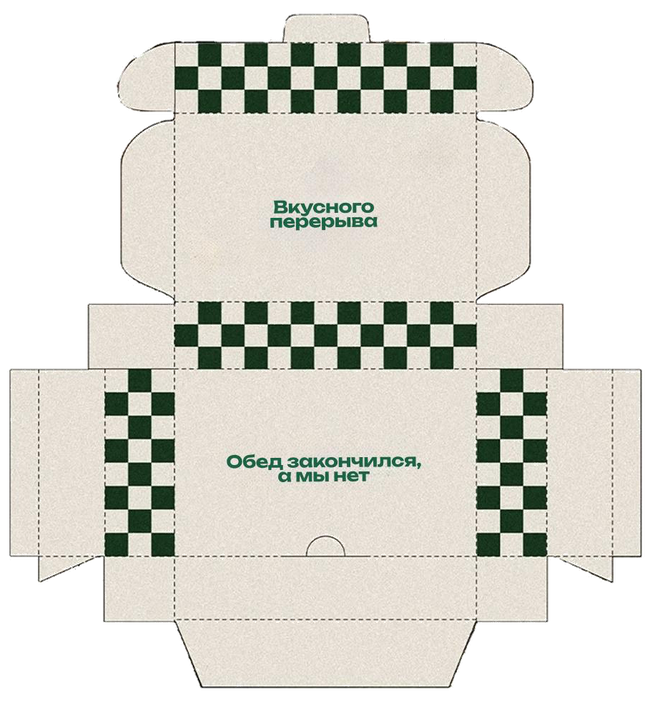

BAGEL GO
Бейгл на бегу как полноценный приём пищи, а не перекус — конкурирует не с другими бейгельными, а с привычкой пропускать обед или заменять его нездоровым фастфудом.
Что уже происходит на рынке
В Москве бейгл нигде не главный герой — пункт меню в кофейнях широкого профиля. Специализированных сетевых бейгельных с собственной доставкой в городе нет ни одной.
Ближе всего подошёл поп-ап Nephew (Покровка): 3 позиции в меню, очередь с открытия, стабильный солдаут к обеду — прямое доказательство спроса без сети и без доставки.
Первый бейгл-бренд Москвы, который выходит сразу сетью точек и с доставкой как основным каналом — не второстепенным.
| Место | Формат | Бейгл, ₽ |
|---|---|---|
| Nephew | поп-ап, только бейглы | 640–990 |
| Bagel 1st | бейгл + кофе, 1 точка | 350 |
| The Bagel Bar | кофейня, бейгл в меню | 400–500 |
| Daily Green / Nude / Zionist | кафе широкого профиля | 390–550 |
| Lambic / Аэроплан.Кофе | премиальная подача | 750–790 |
| BAGEL GO | сеть + доставка | 390–650 |
Кому и зачем?
Основная аудитория — городские 24–40 лет: работают в офисе или из кафе, привыкли обедать быстро, но раздражены выбором между «быстро и вредно» и «полезно и долго». Живут и работают в пределах Садового – ТТК, заказывают доставку на завтрак и обед.
Вторичная — гастро-аудитория, которая уже стоит в очередях за Nephew и готова прийти за новым местом ради самого продукта и картинки.
Первый бейгл-бренд Москвы, который выходит сразу сетью точек и с доставкой как основным каналом — не второстепенным.
«Один бейгл — весь баланс»: белки, углеводы, жиры, клетчатка в одном продукте, которого достаточно, чтобы полноценно поесть за 5 минут на бегу.
Это позволяет говорить прямо: быстрая еда, от которой не тяжелеешь к трём часам дня.
«Мне нужно быстро и вкусно поесть на бегу — и не чувствовать, что я предал своё тело ради экономии 20 минут»
Идея бренда

весь баланс
Городской человек 24–40 лет обедает на бегу почти каждый день — между встречами, по дороге в офис, в перерыве между делами. Как правило, у него по факту два варианта: пропустить приём пищи или схватить что-то быстрое и несбалансированное. Первое бьёт по энергии и концентрации до конца дня, второе — по ощущению «я опять съел не то».
BAGEL GO закрывает этот разрыв. Один бейгл — не перекус между делами, а полноценный приём пищи: белки, углеводы, жиры и клетчатка в одном продукте, которого достаточно, чтобы не пропускать обед и не жертвовать балансом ради скорости.
Позиционирование
Для городских жителей, которые обедают на бегу и следят за тем, что едят, BAGEL GO — сеть бейгельных, которая заменяет полноценный приём пищи, а не дополняет его перекусом. В отличие от привычного фастфуда на бегу, каждый бейгл закрывает белки, углеводы, жиры и клетчатку одним продуктом за 5 минут — без стола, без меню на десять минут выбора, без компромисса.
От заказа до первого укуса — минуты, а не приём пищи «с рассадкой».
Состав виден и понятен — никаких «секретных» соусов ради вкуса в ущерб пользе.
В каждом бейгле закрыт баланс: белок, сложные углеводы, полезные жиры, клетчатка.
Этого бейгла реально хватает. Не «перехватить».
Tone of voice
Обращение — на «ты». Бренд говорит так же, как ест его аудитория — быстро, по делу, без лишних слов. Ниже — принципы и то, как они звучат в реальных точках контакта.
Полезный друг,
а не диетолог
Мы знаем состав и цифры, но не читаем лекций и не стыдим за вчерашний бигмак. Тон — как у друга, который подскажет вариант получше, когда ты спешишь.
Ритм на бегу
Говорим то, что есть, без метафор, которые нужно расшифровывать. «Белки. Углеводы. Жиры. Клетчатка. Всё — в одном бейгле» — а не образы про эмаль и витрины.
Теплое обращение
Не давим на то, что человек «плохо питается» или «опять на бегу». Мы здесь, чтобы помочь, а не осудить.
Визуальный язык
Минимализм здесь — не стиль ради стиля, а функция: имя и цвет должны сообщать «полезно» мгновенно, без дополнительной расшифровки. Меньше декора — больше воздуха и чёткости.
Палитра
Зелёный — прямой, однозначный код пользы. Он основной, а не акцент, — в отличие от прежней палитры, где зелёный был лишь одним из нескольких равнозначных цветов. Красный и горчичный — акценты, а не основа: перец чили и соус как обещание, что внутри не только тесто.
Визуальный язык
Клетка и полоса — фирменный узор
Клетка деревенской бургерной и кафельный пол нью-йоркского дели — общий предок. Используем как акцент: кромка меню, обёрточная бумага, плитка на входе в заведение.
Логотип

Кольцо — это одновременно буква «О» в слове GO и форма бейгла: кольцо теста, свёрнутое в круг. Буква «G» — она читается ещё и как стрелка, идущая сама за собой: замкнутая петля без начала и конца, взгляд обегает её по кругу, не останавливаясь.
Это и есть «на бегу» в чистом виде — движение, которое не заканчивается, а не разовый жест указателя. Один знак закрывает сразу три смысла: буква, продукт, движение — не нужно рисовать отдельно бейгл и отдельно значок стрелки.
Внутрь кольца встроена нашивка с надписью «bagel» — будто пришитая. Она работает как маленькая печать.
Форма для сотрудников



Футболка
На футболке представлена надпись «BAGEL GO» на стороне 1 и стороне 2. Основной цвет ткани — тесто (CREAM).
Кепка
Первый вариант представлен с нашивкой-патч со знаком: стрелка, которая идёт по кругу, и сам круг, который означает бейгл. Второй вариант представлен с нашивкой надписи «BAGEL GO».
Упаковка

Стаканчик для напитков
Минимальный дизайн — только знак GO — держит ту же логику, что и остальная айдентика: ничего лишнего, только вордмарк.

Упаковка для одного бейгла
Формат рассчитан на одного человека и один полноценный приём пищи — поэтому коробка компактная, под один бейгл. Бренд не пытается продать «побольше», он утверждает, что одного бейгла достаточно. Надпись на крышке — «Пока вы спали, кто-то уже собрал ваш обед вручную» — работает на принцип честности: бейгл не с конвейера, а собран руками, рано утром, под конкретный заказ.

Влажная салфетка и перчатки
Это функциональная часть позиционирования «на бегу»: если человек ест по дороге на встречу или между делами, у него не должно остаться следов — ни на руках, ни на одежде, ни потом на телефоне или клавиатуре. Это не про эстетику упаковки, а про то, чтобы полноценный приём пищи на ходу физически не создавал неудобств, — собственно то, ради чего вся концепция BAGEL GO и затевалась.
Упаковка
Это внешняя и внутренняя сторона одной упаковки.

Внешняя сторона

Внутренняя сторона
На внешней стороне вордмарк BAGEL GO и сплошная зелёная плашка, без узора и без реплик. Контрастный узор и логотип заведения работает быстро и привлекает внимание.
Внутренняя сторона — это то, что видит человек, который открыл коробку сам — что-то вроде тихой подписи после громкой обложки. Надпись «Вкусного перерыва» является обращением к клиенту, чтобы он замедлился и вкусно пообедал. Надпись «Обед закончился, а мы нет» покупатель замечает лишь тогда, когда съедает бейглы.
Разница между шумной внешней стороной и тихой внутренней ровно повторяет саму суть бренда: снаружи — скорость и «на бегу», внутри, когда человек наконец остановился и открыл коробку, — более личный, спокойный момент один на один с едой.
Точка
40–70 м², окно-витрина на улицу, за которым видно, как бублики варятся и садятся в печь — главная реклама точки, работающая без бюджета. Отдельная зона выдачи для курьеров критична операционно: не там же, где живая очередь гостей.
варка · печь · видно с улицы
касса · витрина бейглов
отдельный вход/полка — не пересекается с очередью гостей
География
Логотип задаёт и логику роста. Точки идут по Садовому кольцу и в последующем могут продвигаться дальше.
Запуск
Что мы прошли — рынок без сетевых бейгельных, идею «один бейгл — весь баланс», честный голос, зелёную айдентику, меню и точку с открытой кухней на витрину.
Первая точка — на Садовом кольце: Новослободская, Белорусская, Курская или Парк культуры. Дальше — тот же принцип, кольцами, до МКАД.
«Один бейгл — весь баланс»: белки, углеводы, жиры, клетчатка в одном продукте, которого достаточно, чтобы полноценно поесть за 5 минут на бегу.
Это позволяет говорить прямо: быстрая еда, от которой не тяжелеешь к трём часам дня.
«Первый бейгл-бренд Москвы, который выходит сразу сетью точек и с доставкой как основным каналом — не второстепенным»